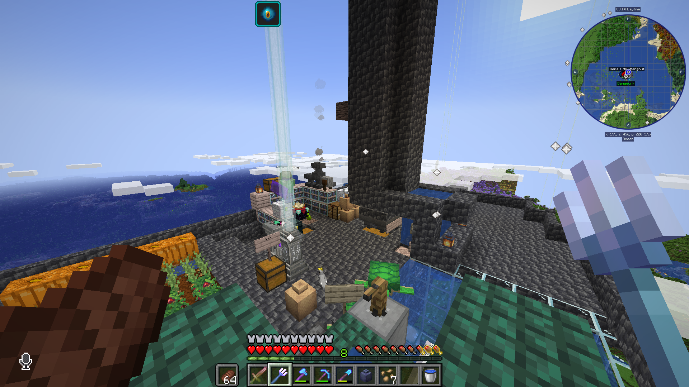
The top of Dema's AIO hangout, featuring a conduit (so I could breathe air), a fishing hole that fulfills the requirements to enable the treasure loot table, a small garden, an enchanting area, and a mob farm. Dema's behind the beacon!
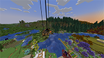
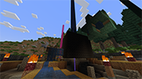
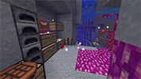
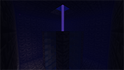
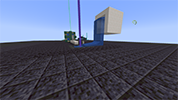
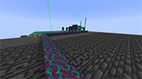
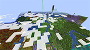
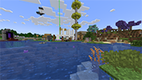
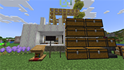
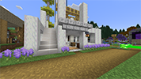
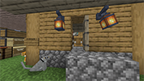
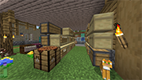
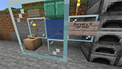
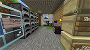
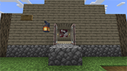
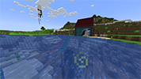
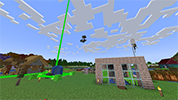
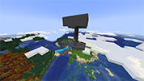
, a fishing hole that fulfills the requirements to enable the treasure loot table, a small garden, an enchanting area, and a mob farm. Dema's behind the beacon!")
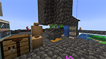
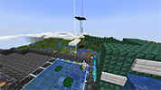
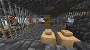
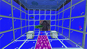
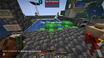
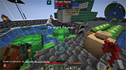
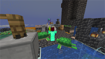
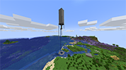
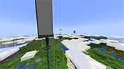
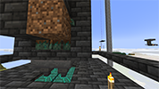
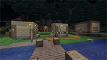
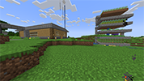
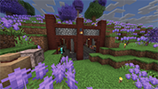
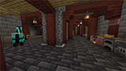
. It was real fun (:")
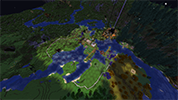
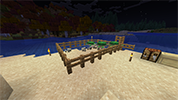
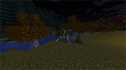
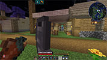
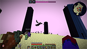
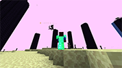
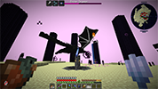
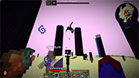
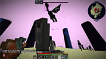
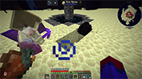
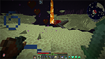
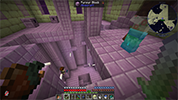
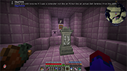
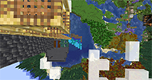
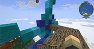
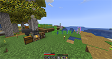
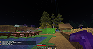